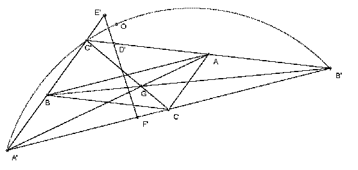

ABC is a triangle with circumcenter O, orthocenter H and circumradius R. The points D, E, F are the reflections of A, B, C respectively, in the opposite sides. Show that they are collinear iff OH = 2R.
Solution

Let G be the centroid of A, B, C. Take the homothety h with center G and ratio -1/2. Let A' = h-1(A), B' = h-1(B), C' = h-1(C). Let D', E', F' be the projections of O onto the lines B'C', C'A', A'B'. We claim that h(D) = D', h(E) = E', h(F) = F'. It follows that D, E, F are collinear iff D', E', F' are collinear. But, by Simson's theorem, D', E', F' are collinear iff O lies on the circumcircle of A'B'C'. Since A'B'C' has circumcenter H and circumradius 2R, the result is established. [We have h(H) = O, by the Euler line result. Since h has ratio -1/2 the circumradius of A'B'C' is 2R.]
To prove the claim, note that OD' is perpendicular to B'C' and, if M is the midpoint of BC, OM is perpendicular to BC, which is parallel to B'C', so MD' is perpendicular to BC and hence parallel to AD, also MD' = AD/2. So consider the triangles GMD' and GAD. Since MD' is parallel to AD, angle GMD' = angle GAD. Also GM/GA = MD'/AD = 1/2. So the triangles are similar. Hence DGD' is a straight line and D'G/DG = 1/2. So h(D) = D', as claimed. Similarly for E' and F'.
The Euler line is the line through O, G and H with GH = 2OG. To prove this take a point H' on the line OG on the opposite side of G to O and with GH' = 2OG. Let AM be the median. Then AG = 2GM, so the triangles AGH' and MGO are similar. So AH' is parallel to OM and hence perpendicular to BC. Similarly, BH' is perpendicular to CA and CH' is perpendicular to AB. So H' is the orthocenter.
Simson's theorem is that the feet of the perpendiculars from a point P to the lines through the three sides of a triangle are collinear iff P lies on the circumcircle. This is easy to prove. Let the triangle be ABC and the feet of the perpendiculars from P to BC, CA, AB be X, Y, Z respectively. Assume that X is between Y and Z and that ZXY is a straight line. Angle PXB = angle PZB = 90o so PXBZ is cyclic. Similarly, PXYC is cyclic. We have angle PXZ = angle PBZ = 180o - angle PBA. But since angle ZXY = 180o we also have angle PXZ = 180o - angle PXY = angle PCY = angle PCA. Hence PBAC is cyclic. Conversely, if P lies on the arc BC, we have angle PXZ = angle PBZ = 180o - angle PBA = angle PCA = 180o - angle PXY. So ZXY is a straight line.

© John Scholes
jscholes@kalva.demon.co.uk
30 Aug 2002